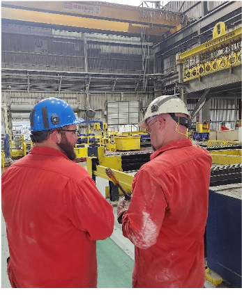
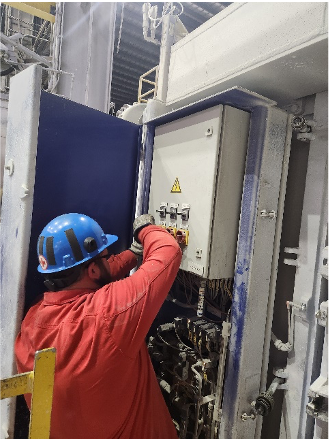
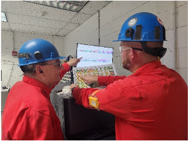
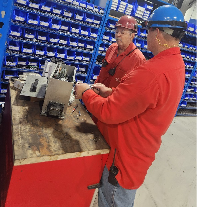

"In order to be a successful Lead person you need to have all the skills to effectively operate in all 3 areas of production (Charging, Casting, Saw) and extensive knowledge of Homogenization and log tracking for both Conti and Batch."
The Production Lead at an aluminum processing plant is responsible for overseeing daily production operations, ensuring safety, quality, and efficiency, while fostering a collaborative and high-performing team environment. This role requires strong leadership, advanced problem-solving, and critical thinking skills to manage complex challenges and drive continuous improvement initiatives. The Production Lead plays a pivotal role in coordinating operations, delegating tasks, and aligning team goals with organizational strategy.
"A successful Lead will need to be able to help troubleshoot problems in each area and come up with solutions to keep us on track and safe."
Key responsibilities include managing time effectively for oneself and the team, facilitating the resolution of complex problems, and collecting and analyzing data to optimize processes. The Production Lead must demonstrate exceptional communication skills to influence and empower team members, while also setting realistic goals and tracking progress through clear and impactful reporting. Embracing change and fostering innovation are integral to this role, along with the ability to empathize and adapt to the needs of team members to promote a positive and inclusive work environment.
"A lead operator must maintain a positive attitude and be flexible when it comes to a changing market. Lead operators serve as a buffer between the floor and supervision and must be able to effectively communicate things down to the floor level. They must be able to take responsibility of the entire plant in the event the supervisor is not here. Also, they need to have knowledge of every area in order to keep the plant running and product flowing by front line maintenance on minor issues that may arise that is out of normal operating hours."
This position demands a results-oriented mindset, a strong commitment to reliability, and a willingness to learn and grow continuously. The ideal candidate will combine self-awareness and empathy with decisive action, ensuring alignment with organizational goals while supporting the development and success of the team.
The Department Supervisor at Hydro Aluminum is responsible for leading and optimizing the operations of production, material handling, or maintenance departments. This role requires a strong focus on operational excellence, team leadership, and continuous improvement, ensuring that safety, quality, and efficiency standards are consistently met or exceeded. The Department Supervisor is a key driver of business development, empowering team members, and fostering a culture of collaboration, innovation, and inclusivity.
"On the hard skills side, knowledge of the plant and manufacturing is very helpful along with knowing safety and quality standards. Critical soft skills needed include problem solving, prioritization (decision making), Communication (written, verbal, and active listening), Adaptability/Flexibility, resource management (delegation and finding answers you don't know), and strong interpersonal skills (the right blend of empathy, positivity, and backbone)." -Production Supervisor
Key responsibilities include managing time and resources efficiently, solving complex problems by identifying patterns and trends, and coordinating departmental operations to align with strategic goals. The Supervisor is expected to communicate effectively with diverse groups, inspire high-performance teams, and implement changes to improve processes and outcomes. By collecting and analyzing data, setting realistic and strategic goals, and presenting clear and actionable reports, the Supervisor ensures that departmental objectives align with organizational vision and purpose.
"Employees interested in this role need to have the following skills to be successful: Time management, good people skills, advance computer skills and power equipment experience." -Material Handler Supervisor
This role demands advanced critical thinking, decisiveness, and the ability to mentor and develop team members while promoting empathy and self-awareness. The ideal candidate demonstrates reliability under all circumstances, embraces change, and actively seeks opportunities for personal and professional growth while sharing knowledge and experience to support team success.
"A good maintenance supervisor can inspire their team and build trust and rapport with them. They should ensure that the team works together towards common goals. The maintenance supervisor should have strong communication skills so they can provide good customer service and direct their team. They should be able to spot potential problems and act quickly to avoid serious issues." -Maintenance Supervisor
Department Managers oversees the production, material handling, and maintenance departments at Hydro Aluminum, ensuring operational excellence, safety, and alignment with strategic organizational goals. This role requires a strong ability to lead diverse teams, anticipate and address challenges, and create opportunities for continuous improvement and growth across all departments.
A Department Manager is responsible for coordinating operations, optimizing time and resources, and fostering a culture of teamwork and collaboration. They play a critical role in developing and implementing strategies that align with organizational objectives, leveraging advanced problem-solving, data analysis, and conceptual thinking to drive performance. A commitment to empathy, empowerment, and personal development ensures an inclusive and dynamic workplace environment.
This position is suited for a forward-thinking leader who excels at aligning departmental operations with strategic goals, developing high-performing teams, and driving innovation in a dynamic manufacturing environment. The ideal candidate will be a results-oriented professional who inspires others through empathy, decisiveness, and a commitment to excellence.
Production Lead: Can manage own, others' and team's time
Department Supervisor: Can optimize team's time
Department Manager: Can optimize department's time
Production Lead: Can locate, gather, and critically evaluate information
Department Supervisor: Can locate, gather, critically evaluate, and synthesize information
Department Manager: Can locate, gather, critically evaluate, synthesize and create new information
Production Lead: Can facilitate the solving of complex problems
Department Supervisor: Can identify patterns and trends in problems
Department Manager: Can anticipate and prevent problems
Production Lead: Can gather, organize, and interpret information
Department Supervisor: Can gather, organize, interpret, and analyze information
Department Manager: Can gather, organize, interpret, analyze and create information
Production Lead: Can identify, implement, and measure improvements
Department Supervisor: Can identify, implement, measure and optimize improvements
Department Manager: Can identify, implement, measure, optimize, and create improvements
Production Lead: Can be counted on to meet commitments consistently
Department Supervisor: Can be counted on to meet commitments under any circumstances
Department Manager: Can be counted on to meet commitments and exceed expectations
Production Lead: Can identify, analyze, and evaluate complex problems. Demonstrates attention to detail and the ability to synthesize complex data, contributing to team goals and objectives
Department Supervisor: Can identify, analyze, evaluate, and solve complex problems. Effectively assesses and interprets information, identifying patterns and trends to inform decision-making and problem-solving
Department Manager: Can identify, analyze, evaluate, solve, and anticipate complex problems. Applies advanced analytical thinking skills to solve complex problems, drive improvements, and make informed decisions that align with organizational goals
Production Lead: Can complete, achieve and exceed goals
Department Supervisor: Can complete, achieve, exceed and optimize goals
Department Manager: Can complete, achieve, exceed, optimize and create goals
Production Lead: Can optimize a team's performance
Department Supervisor: Can build and lead high-performance teams
Department Manager: Can create a team-oriented culture
Production Lead: Can collect, organize, interpret, and analyze data
Department Supervisor: Can collect, organize, interpret, analyze, and use data
Department Manager: Can collect, organize, interpret, analyze, use, and create data
Production Lead: Continuously learns and develops
Department Supervisor: Actively shares knowledge and experience
Department Manager: Acts as a thought leader. Consistently demonstrates curiosity, self-reflection, and a commitment to ongoing development
Production Lead: Can communicate with impact
Department Supervisor: Can communicate to large groups
Department Manager: Can communicate to diverse audiences
Production Lead: Can make high-stakes decisions by applying critical thinking and problem-solving skills. Drives positive outcomes and aligns with organizational goals
Department Supervisor: Can make complex decisions. Consistently demonstrates the ability to make timely, informed, and effective choices
Department Manager: Can make strategic decisions. Ensures that team decisions align with organizational goals and that team members are empowered to make informed choices
Production Lead: Can analyze problems
Department Supervisor: Can solve problems
Department Manager: Can prevent problems
Production Lead: Can initiate and manage change
Department Supervisor: Can initiate, manage and optimize change
Department Manager: Can initiate, manage, optimize and create change
Production Lead: Can set, align and optimize goals with strategy
Department Supervisor: Can set, align, optimize and create goals with strategy, vision, and purpose
Department Manager: Can set, align, optimize, create and lead goals with strategy, vision, purpose and impact
Production Lead: Can identify, manage and understand emotions and their impact. Continuously engages in self-reflection and seeks feedback to enhance self-awareness and personal growth.
Department Supervisor: Can identify, manage, understand and optimize emotions and their impact. Consistently demonstrates emotional intelligence, self-reflection, and adaptability in the workplace
Department Manager: Can identify, manage, understand, optimize and leverage emotions and their impact. Encourages team members to recognize and understand their emotions, strengths, and weaknesses, and to adapt accordingly to enhance their performance and relationships
Production Lead: Can influence others effectively
Department Supervisor: Can inspire others effectively
Department Manager: Can lead others effectively
Production Lead: Can identify, pursue, and develop business opportunities
Department Supervisor: Can identify, pursue, develop and optimize business opportunities
Department Manager: Can identify, pursue, develop, optimize and create business opportunities
Production Lead: Can understand complex concepts and see connections
Department Supervisor: Can understand and create complex concepts and connections
Department Manager: Can understand, create, and anticipate complex concepts and connections
Production Lead: Can coordinate and manage operations
Department Supervisor: Can coordinate, manage, and optimize operations
Department Manager: Can coordinate, manage, optimize, and create operations
Production Lead: Can provide support, guidance, and development opportunities
Department Supervisor: Can provide support, guidance, development opportunities, and growth opportunities
Department Manager: Can provide support, guidance, development opportunities, growth opportunities, and leadership development opportunities
Production Lead: Can assign, follow up, and manage tasks
Department Supervisor: Can assign, follow up, manage, and evaluate tasks
Department Manager: Can assign, follow up, manage, evaluate, and optimize tasks
Production Lead: Can present, organize, and analyze information
Department Supervisor: Can present, organize, analyze and communicate information effectively
Department Manager: Can present, organize, analyze, communicate and create information effectively
Production Lead: Can empathize with complex emotions and situations. Adapts communication style to better understand and respond to the feelings, thoughts, and experiences of others, ensuring that their needs are met
Department Supervisor: Can empathize, understand and communicate effectively with diverse groups. Mentors others in developing empathy skills, fostering a culture of understanding, collaboration, and inclusivity
Department Manager: Can empathize, understand, communicate, anticipate, and create an inclusive environment. Fosters a culture of empathy within the team by setting clear expectations, promoting active listening and emotional intelligence, and providing support for individual growth and development